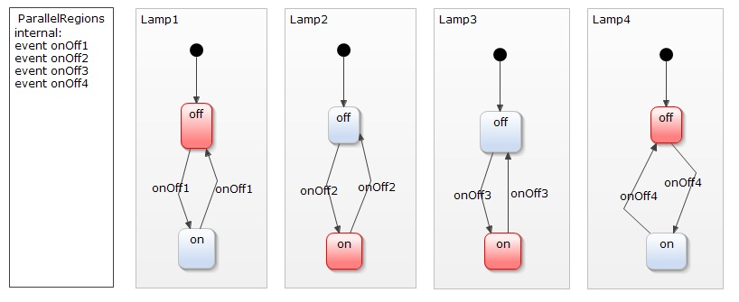
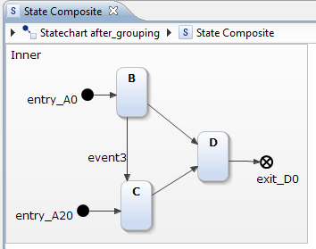
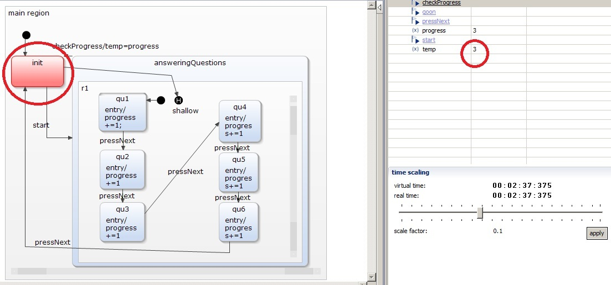
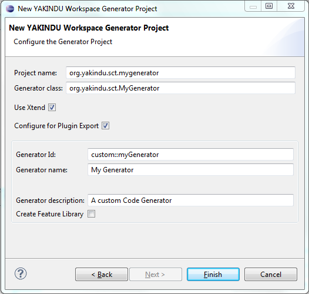

In the following the state chart elements of the YAKINDU SCT 2 editor are described. The meta model of the YAKINDU SCT 2 is the model of finite state machines. It is based on the view of a system that is defined by a finite number of states. The behavior of that system is based on the active states. These states are determined by the history of the state machine. Very important are the theoretical models for state machines by Mealy and Moore. Mealy state machines associate actions with transitions. Moore machines associate actions with states (entry, exit). In the YAKINDU SCT 2 both is possible.
The YAKINDU SCT 2 meta model is designed similar to the UML state chart meta model with the following differences
The model interpreter and different flavors of generated code follow these same core semantics.
Please refer to the description of the UML Statecharts for more details.
As already mentioned the YAKINDU state charts are self contained. They are organized in regions. Due to this it is possible to organize multiple state machines in different regions and to run them concurrently.

States are the central elements of a state machine. A state has to be placed inside a region and needs a unique name inside this region. During simulation each state can be active or passive. An active state has actions that are accomplished. Either an action is carried out on entering a state, during active state or on exit.
A transition is the transfer of one state to another. Transitions are diagrammed as arrows and can carry events and actions but must not.
The syntax of events and actions is defined by a textual description language (#Statechartdescriptionlanguage). Please refer to the documentation section Events for more details. For more details on Actions refer to the chapter Actions.
If a state has more than one outgoing transition without event that transition is carried out first that was modeled first.
Initial and final states are pseudo states, because the state chart does not rest on them. Pseudo states express characteristics that are impossible to express by simple states.
The initial state is always the first state that is active during interpretation or simulation of the state machine. An initial state can only have one outgoing transition and no incoming. This transition has no events or actions.
Inside a region only one initial state is allowed, but every region can have an initial state.
Choice is also a pseudo state. It can be used to model a conditional path. Choice nodes divide a transition into multiple parts.
Usually the first transition points towards the choice node. One of the choice outgoing transitions can carry a condition.
A junction is a pseudo state do combine transitions. This is very comfortable if a state machine has many similar transitions. Junctions add clear arrangement to the state machine.
A composite state is a state that is composed of other state machines. These are also organized in regions. Besides the simple composite state YAKINDU knows two kinds of composite states: orthogonal state and submachine states.
Composite states contain other state machine branches.
In the context of state machines orthogonal states are states that are independent from each other. The most famous example is the keyboard example:
When using Composite States, the statechart model often becomes too big to get a complete overview of the whole diagram. Although it is possible to collapse and expand a state’s figure compartment, these actions spoil the diagram layout each time they are executed. Therefore, we introduced so-called Subdiagrams.

If the ‚Extract Subdiagram’ refactoring is executed on a Composite State, all containing Regions are extracted into a separate diagram. A small decorator in the lower right corner of the State indicates the existence of such a subdiagram. If you hover with the mouse cursor over the decorator, you get a small preview image of the subdiagrams content. The refactoring also creates required Entry and Exit Points for you.

With a click on the decorator, the subdiagram opens in a separate editor tab. The breadcrumb on the top allows easy navigation throughout the different hierachy levels.

The shallow history state is a pseudo state that is placed inside regions of composite states. It is used to ‚remember’ the last active state inside a composite state. So it is possible to jump to this state instead of starting at the inner entry state again. The following example of a questionaire answering will explain this:

The interesting parts in this state chart are the events checkProgress and goon. CheckProgress jumps back to the init state while assigning the current progress count to the variable temp. goon jumps to the shallow history state that was placed inside the composite state.


On triggering the goon event the last active state is activated again.
Deep history is similar to shallow history but more complex. With a deep history the latest state of multiple nested states is remembered.
The textual description language is used to declare and describe behaviors in the state machine. It is case sensitive.
The language has an integrated small typesystem with the following simple types:
So events and variables can be declared with types:
var intVar : integer
var realVar : real
var boolVar : boolean
var stringVar : string
var voidVar : void
event addInt : integer
event checkValidity : boolean
Expressions can be defined similar to other programming languages. The language offers operators to define logical expressions, bitwise arithmetic, and arithmetic expressions and bit shifting.
Logical expressions are similar to other programming languages. The return type is boolean. In the following there are some examples of these:
var1 && var2
var1 || var2
!var1
var1 ? var2 : 23
var1 ^ var2
var1 | var2
var1 & var2
| less than | < |
| equal or less than | <= |
| greater than | > |
| equal or greater than | >= |
| equal | == |
| not equal | != |
| shift left | << |
| shift right | >> |
| plus | + |
| minus | - |
| multiply | * |
| divide | / |
| modulo | % |
| positive | + |
| negative | - |
| complement | ~ |
A statements can be either an assignment, raising an event or call an operation. The language has the following assignment operators:
|=
An event is raised by the keyword raise followed by the event name and if it is an interface event the name of the interface.
An operation is called similar to other programming languages with the operation name and passing concrete parameters. The parameters can be expressions.
The language allows to define unique namespaces, which can be used to qualify references to the statechart.
namespace trafficlights
Declarations in the interface scope are externally visible. They can be shared within the environment.
interface NamedInterface:
in event event1
out event event3
var variable1 : real
entrypoint entry1
exitpoint exit1
Declarations made in an internal scope are only visible for contained states.
internal:
var localVariable1: integer
event localEvent: integer
local event localEvent2: NamedInterface.event1 || localEvent
local event localEvent3: localEvent || localEvent2 : 25
operation localOperation (integer, integer): integer
localEvent3 / raise NamedInterface.event3 :
localOperation(valueOf(localEvent),NamedInterface.variable1);
Within scopes there can be declarations of Events, Variables, Operations, LocalReactions, EntryPoints and ExitPoints.
Within interface scope events have an direction. They can either be ingoing or outgoing:
interface NamedInterface:
in event event1
out event event2
Within local scope events can carry variables:
internal:
event localEvent1 : integer
Local events can be derived from interface events or other local events and can have a value assignment:
internal:
event localEvent1: integer
local event localEvent2 = NamedInterface.event1 || localEvent1
local event localEvent3 = localEvent2 || 25
Variables can have different visibilities. They can be visible for the environment:
var variable1: real
Variables can be readonly (constants):
var readonly pi: real = 3.1415
Variables can be referenced by the environment.
var external variable3: integer = 34
Actions are key constructs in state machines to model behavior. The YAKINDU SCT 2 knows the following kinds of actions.
The after trigger specifies one-shot time events.
After the specified time the reaction is triggered. An after trigger can be used in transitions of states as well in local reactions of states and statecharts. The specified time starts when the state or statechart is entered.
after 20 s
Structure:
after
time
unit
The time value may be a constant or an expression that returns an integer value.
The time unit can be:
The every trigger specifies periodic time events.
The reaction is triggered periodically after the specified time. An every trigger can be used in transitions of states as well in local reactions of states and statecharts. The specified time starts when the state or statechart is entered and repeats periodically.
every 200 ms
Structure:
every
time
unit
The time value may be a constant or an expression that returns an integer value.
The time unit can be:
This trigger is always true and enables a reaction to be executed in every run to completion step (RTS). It is equivalent to oncycle.
The default trigger is equivalent to the else trigger. It is intended for use for the outgoing transitions of choice pseudo states, to make sure that always an outgoing transition can be taken. It can only be be used in transitions and implies the lowest evaluation priority for that transition.
An entry trigger marks actions that are carried out on entering a state or state machine.
An exit trigger marks actions that are carried out on exiting a state or state machine.
The oncycle trigger is always true and enables a reaction to be executed in every run to completion step (RTS). It is equivalent to always.
Operations can have none, one or multiple parameters. The parameters are only declarated by their type. An operation can have one return type similar to Java.
operation localOperation (integer, integer):integer
localEvent3/ raise NamedInterface3.event1
Returns the value of an valued event that it passed to the function as parameter.
myVar = valueof(myEvent)
Returns „true” if a state is active or „false” otherwise.
myBool = active(StateA)
Local reactions describe the internal behavior of a state. So they have internal scope. A local reaction is declared as follows:
LocalReaction: ReactionTrigger '/' ReactionEffect ('#' ReactionProperties)?
ReactionTrigger: (Event ("," Event )* (=> '[' Expression ']')?) | '[' Expression ']'
ReactionEffect: Statement (';' Statement )* (';')?
Statement: Assignment | EventRaising | OperationCall
ReactionProperties: (EntryPoint | ExitPoint)*
Within a local reaction an interface event can be raised:
internal:
localEvent1 / raise NamedInterface.event3 : localOperation (valueOf(localEvent), NamedInterface.variable1);
Local reactions can have priority values. These are defined by a following # and the integer number of priority:
localEvent2 / NamedInterface.variable2 += 3; #1
localEvent3 / NamedInterface.variable4 += 2.0; #2
Every state chart has an entry point. An entry point can be declared like the following:
entrypoint entry1
Every state chart has an exit point. This exit point can be declared like the following.
exitpoint exit1
All generators can be customized with a generator model. This is a textual model file where generator features, like i.e. the outlet path, can be specified. The following screenshot shows an example configuration for the java code generator.
To get started with the generator model, we included a new Eclipse wizard that creates a basic configuration file with default values.

The generator model is associated with the builder. If Project > Build Automatically is checked the files are generated. In the following the specific customizing features of the generator models are explained.
The following section describes the Core Features which are available for all code generators:
The Outlet feature specifies the target project and folder for the generated artifacts. It is a required feature and consists of the following parameters:
Example configuration:
feature Outlet {
targetProject = "ExampleProject"
targetFolder = "src-gen"
}
The LicenseHeader feature specifies the license text that should be added as a header to the generated artifacts. It is an optional feature and consists of the following parameters:
Example configuration:
feature LicenseHeader {
licenseText = "Copyright (c) 2012 committers of YAKINDU and others."
}
The
FunctionInlining feature allows the inlining of expressions instead of generating separate functions or methods. This might reduce the readability of the generated code, but increases performance because less operation calls are necessary.
It is an
optinal feature and consists of the following parameters:
Example configuration:
feature FunctionInlining {
inlineChoices = false
inlineEnterRegion = true
inlineEntries = true
}
The Debug feature dumps the Execution Model to the target folder as xmi model. It is an optional feature and consists of the following parameters:
Example configuration:
feature Debug {
dumpSexec = true
}
The
Naming feature allows the configuration of package names as well as class name prefix / suffix.
It is an
optional feature and consists of the following parameters:
Example configuration:
feature Naming {
basePackage = "org.yakindu.sct"
implementationSuffix = "Impl"
}
The GeneralFeatures feature allows to configure additional services to generate with the statemachine. Per default, all parameters are configured to false It is an optional feature and consists of the following parameters:
Example configuration:
feature GeneralFeatures {
InterfaceObserverSupport = true
RuntimeService = true
TimerService = true
}
YAKINDU Statechart Tools provides a rich feature set to supports custom code generators out of the box. These code generators can be either written in Java, Xtend or in Xpand
First, you have to create a new Xtend2 generator project. Click File > New > Other... > YAKINDU > YAKINDU Xtend2/Java Generator Project to create a new Xtend2 Generator Project.

The wizards asks for a Project name and the name of the Generator class, where you have to specify a full qualified class name. If you check the Use Xtend checkbox, the Generator class will be initially created as an Xtend class. Otherwise, Java will be used for the generator.
The check box Configure for Plugin Export adds all required extension point registrations to the new project for exporting as a plugin The Generator Model can refer to the new Generator Plugin via its unique Generator ID. If you want to contribute custom generator features for your code generator, check the Create Feature Library check box.
After click on Finish a new project is created in your workspace. All required plugin dependencies and extension points are registered and you can start to write your code generator based on the ExecutionFlow meta model [Link].
YAKINDU Statechart Tools provide a convenient way to execute your generator while you are developing it.
Therefore, you have to create a new
Generator Model with the generator id
yakindu::generic, either by using the
New Statechart Generator Model wizard or by simple creating a new text file with the file extension
.sgen. the following feature allows to configure your code generator.
The Generator feature allows the configuration of a custom code generator located in the workspace and written in Java or another JVM language. It is a required feature and consists of the following parameters:
Example configuration:
feature Generator {
generatorProject = "org.yakindu.sct.mygenerator"
generatorClass = "org.yakindu.sct.MyGenerator"
}
to execute an xpand based custom code generator, you have to create a new Generator Model with the generator id yakindu::xpand, either by using the New Statechart Generator Model wizard or by simple creating a new text file with the file extension .sgen. the following feature allows to configure your code generator.
The Generator feature allows the configuration of a custom code generator located in the workspace and written in Java or another JVM language. It is a required feature and consists of the following parameters:
Example configuration:
feature Template {
templateProject = "ExampleProject"
templatePath = "org::yakindu::sct::generator::xpand::Main::main"
}
In the following comments the TrafficLight example statemachine is used to describe the API specifications of the code generated by the Yakindu C and Java code generators. The following image shows the statechart. It is a model of a simple pedestrian crossing with a traffic light for pedestrians and a traffic light for the cars.

For Java you can checkout the project ‚org.yakindusct.examples.trafficlight’ from the Yakindu google code repository ( Google code link ). The Java example contains the statechart, sgen model, graphical widgets and some glue code to connect the generated code with the widgets. The graphical widgets are based on SWT. To execute the Java example you can run the file ‚CrossingDemoCycleBased.java’ as ‚Java Application’ from the eclipse ‚Run As’ context menu.
You find the generated code in the ‚src-gen’ folder of the traffic light example.
In the package ‚org.yakindu.sct.examples.trafficlight.cyclebased’ are the most basic statemachine interfaces and classes located. These are needed by each statemachine and are independend from the concrete statemachine design.
The interface
IStatemachine is implemented by each generated statemachine:
package org.yakindu.sct.examples.trafficlight.cyclebased;
/**
* Basic interface for statemachines.
*
*
*/
public interface IStatemachine {
/**
* Initializes the statemachine. Use to init internal variables etc.
*/
public void init();
/**
* Enters the statemachine. Sets the statemachine in a defined state.
*/
public void enter();
/**
* Exits the statemachine. Leaves the statemachine with a defined state.
*/
public void exit();
/**
* Start a run-to-completion cycle.
*/
public void runCycle();
}
It contains the four methods
init(),
enter(),
exit() and
runCycle(). The
init() method is used to initialize the internal objects of the statemachine after instantiation. Variables are initialized to a default value. If you have initialized variables in the statechart definition these initializations are done in the init method too. The
enter() method should be called if the statemachine is entered. It sets the statemachine into a defined state. The
exit() method is used to leave a statemachine statefully. If for example a history state is used in one of the top regions the last active state is stored and the statemachine is leaved via
exit() and reentered via
enter() it continues working with this state. The
runCycle() method is used to trigger a run to completion step in which the statemachine evaluates arising events and computes possible state changes. A run to completion step consists in a simplified view of the following steps:
In the traffic light example timing is used (after clauses). To support this the interfaces ‚ITimedStatemachine’, ‚ITimerService’ and the class ‚TimeEvent’ are generated.
package org.yakindu.sct.examples.trafficlight.cyclebased;
/**
* Interface for state machines which use timed event triggers.
*/
public interface ITimedStatemachine {
/**
* Set the {@link ITimerService} for the state machine. It must be set
* externally on a timed state machine before a run cycle can be correct
* executed.
*
* @param timerService
*/
public void setTimerService(ITimerService timerService);
/**
* Returns the currently used timer service.
*
* @return {@link ITimerService}
*/
public ITimerService getTimerService();
/**
* Callback method if a {@link TimeEvent} occurred.
*
* @param timeEvent
*/
public void onTimeEventRaised(TimeEvent timeEvent);
}
ITimedStatemachine extends the generated statemachine to set an
ITimerService and provides a callback method
onTimeEventRaised(TimeEvent timeEvent) to let the timer service raise
TimeEvents.
Basically the correct handling of time has to be implemented by the developer because timer functions generally depend on the hardware target used. So for every hardware target a timer service class which implements the
ITimerService interface has to be developed. Let’s have a look at the
ITimerService interface:
package org.yakindu.sct.examples.trafficlight.cyclebased;
/**
* Interface a timer service has to implement. Use to implement your own timer
* service. A timer service has to be added to a timed state machine.
*
*/
public interface ITimerService {
/**
* Starts the timing for a given {@link TimeEvent}.
*
* @param event
* : The TimeEvent the timer service should throw if timed out.
* @param time
* : Time in milliseconds after the given time event should be
* triggered
* @param cycleStartTime
* : The absolute start time in milliseconds at which the last
* run cycle was called. Can be used to produce a more accurate
* timing behavior.
*/
public void setTimer(TimeEvent event, long time, long cycleStartTime);
/**
* Unset the given {@link TimeEvent}. Use to unset cyclic repeated time
* events.
*
* @param event
*/
public void resetTimer(TimeEvent event);
/**
* Cancel timer service. Use this to end possible timing threads and free
* memory resources.
*/
public void cancel();
/**
* Returns the system time in milliseconds.
*
* @return the difference, measured in milliseconds, between the current
* time and a defined point of time in the past.
*/
public long getSystemTimeMillis();
}
The
ITimerService interface defines four methods. The
public void setTimer(TimeEvent event, long time, long cycleStartTime) method is called by a statemachine to tell the timer service that it has to start a timer for the given time event and raise it after the time given by the same named parameter is expired. It is important that within the ‚setTimer’ method only a timer thread or a hardware timer interrupt is started and no long time taking operations like Thread.sleep(...) or waiting are done. Otherwise the statemachine execution may hang within the timer service or it shows a not expected runtime behavior.
To raise a
TimeEvent after the time is expired the method
onTimeEventRaised(TimeEvent timeEvent) has to be called on the statemachine (should be a
ITimedStatemachine). So the time event is recognized by the statemachine and will be processed by the next run cycle. You can conclude that the runtime environment has to call the statemachines ‚runCycle’ method as often as needed to process time events raised by the timing service as fast as possible. If you have in example a time event which should be raised by the timer service after 500 ms and the runtime environment only calls the statemachines
runCycle method with a time period of 1000 ms the event could not be processed in the correct time.
The parameter ‚cycleStartTime’ holds the absolute start time of the last run cycle. It can be used to reduce or remove the time offset used by the statemachines runtime operations to get a more precise timing behavior.
The method
resetTimer(TimeEvent event) is called by the statemachine to unset the timer.
The last class used by timed statemachine is
TimeEvent:
package org.yakindu.sct.examples.trafficlight.cyclebased;
/**
* Event that reflects a time event. It's internally used by
* {@link ITimedStatemachine}.
*
* @author muehlbrandt
*
* @param <T>
*/
public class TimeEvent {
private boolean periodic;
private ITimedStatemachine statemachine;
int index;
/**
* Constructor for a time event.
*
* @param periodic
* : Set to {@code true} if event should be repeated
* periodically.
*
* @param index
* : Index position within the state machine's timeEvent array.
*/
public TimeEvent(boolean periodic, int index) {
this.periodic = periodic;
this.index = index;
}
/**
* Returns the state machine reference of the event.
*
*/
public ITimedStatemachine getStatemachine() {
return statemachine;
}
/**
* Sets the state machine reference of the event.
*
* @param statemachine
*/
public void setStatemachine(ITimedStatemachine statemachine) {
this.statemachine = statemachine;
}
public boolean isPeriodic() {
return periodic;
}
public int getIndex() {
return index;
}
}
A
TimeEvent holds a reference to the statemachine it belongs to and a flag if it should be raised periodically. These informations are needed by the timer service implementation to raise the time event on the corresponding statemachine. The index field is used by the timed statemachine internally.
The java code generator generates a default implementation of
ITimerService interface if the TimerService feature is set to ‚true’ in the sgen model. This implementation is based on
java.util.Timer and
java.util.TimerTask and should be compatible with the normal Oracle VM or Open JDK VM:
package org.yakindu.sct.examples.trafficlight.cyclebased;
import java.util.HashMap;
import java.util.Map;
import java.util.Timer;
import java.util.TimerTask;
/**
* Default timer service implementation.
*
*/
public class TimerService implements ITimerService {
private final Timer timer = new Timer();
private final Map<TimeEvent, TimerTask> timerTaskMap = new HashMap<TimeEvent, TimerTask>();
public void setTimer(final TimeEvent event, long time,
long cycleStartTime) {
// Reset existing TimerTask for event. This step isn't necessary if
// timer tasks are properly reset by sexec model.
if (timerTaskMap.containsKey(event)) {
resetTimer(event);
}
// Create a new TimerTask for given event.
timerTaskMap.put(event, new TimerTask() {
@Override
public void run() {
event.getStatemachine().onTimeEventRaised(event);
}
});
// start scheduling the timer
if (event.isPeriodic()) {
timer.scheduleAtFixedRate(timerTaskMap.get(event),
time - (System.currentTimeMillis() - cycleStartTime), time);
} else {
timer.schedule(timerTaskMap.get(event),
time - (System.currentTimeMillis() - cycleStartTime));
}
}
public void resetTimer(TimeEvent event) {
if (timerTaskMap.containsKey(event) && timerTaskMap.get(event) != null) {
timerTaskMap.get(event).cancel();
timer.purge();
}
timerTaskMap.remove(event);
}
public void cancel() {
timer.cancel();
timer.purge();
}
public long getSystemTimeMillis() {
return System.currentTimeMillis();
}
}
The runtime service class can be used by client implementations to execute a run to completion step of a statemachine periodically.
In a yakindu statechart variables and events are contained in interfaces. There could be one default interface defined (without a name) and several named interfaces. In the generated code these interfaces are defined as internal java interfaces of an interface that has the same name as the statemachine. Let’s have a look at following example statechart interface declaration:
interface:
var a:boolean
in event evA:boolean
out event evB:integer
The generated interface code looks like following:
public interface IDefaultSMStatemachine extends IStatemachine {
public interface SCInterface {
public void raiseEvA(boolean value);
public boolean isRaisedEvB();
public int getEvBValue();
public boolean getA();
public void setA(boolean value);
}
public SCInterface getSCInterface();
}
For the unnamed statechart interface a java interface
SCInterface is generated. For the incoming event ‚evA’ a raise method with a boolean parameter is created because the event has a boolean type set. For the outgoing event ‚evB’ the methods
isRaisedEvB() and
getEvBValue() are generated. The first one can be used to determine if the event is raised by the statemachine and the second method serves to query the boolean value of the event. For variables getters and setters are generated too. Additionally the parent interface decribes getter methods to acquire each nested interface.
The statemachine implements the parent interface by iteself and each nested interface is implemented as internal class. It holds an instance of each nested interface implementation which is accessible through a getter method. Have a look at the code snipped of the ‚unnamed’ default interface implementation:
public class DefaultSMStatemachine implements IDefaultSMStatemachine {
private final class SCInterfaceImpl implements SCInterface {
private boolean evA;
private boolean evAValue;
public void raiseEvA(boolean value) {
evA = true;
evAValue = value;
}
private boolean getEvAValue() {
if (!evA)
throw new IllegalStateException(
"Illegal event value acces. Event EvA is not raised!");
return evAValue;
}
private boolean evB;
private int evBValue;
public boolean isRaisedEvB() {
return evB;
}
private void raiseEvB(int value) {
evB = true;
evBValue = value;
}
public int getEvBValue() {
if (!evB)
throw new IllegalStateException(
"Illegal event value acces. Event EvB is not raised!");
return evBValue;
}
private boolean a;
public boolean getA() {
return a;
}
public void setA(boolean value) {
this.a = value;
}
public void clearEvents() {
evA = false;
}
public void clearOutEvents() {
evB = false;
}
}
private SCInterfaceImpl sCInterface;
public DefaultSMStatemachine() {
sCInterface = new SCInterfaceImpl();
}
public SCInterface getSCInterface() {
return sCInterface;
}
}
Now even a few notes on the naming of the generated interfaces and the value access of events. The default (unnamed) interface is named ‚SCInterface’. If an interface has a dedicated name then this name is used with the prefix ‚SCI’ (e.g. ‚SCIInterfacename’). Additionally a value of an event can only be accessed if the event is occured during the run to completion step. Otherwise an
IllegalStateException is thrown by the interface.
If the general feature ‚InterfaceObserverSupport’ is enabled in the sgen model the generated interfaces get support to register observers:
public interface IDefaultSMStatemachine extends IStatemachine {
public interface SCInterface {
public void raiseEvA(boolean value);
public boolean isRaisedEvB();
public int getEvBValue();
public boolean getA();
public void setA(boolean value);
public List<SCInterfaceListener> getListeners();
}
public interface SCInterfaceListener {
public void onEvBRaised(int value);
}
public SCInterface getSCInterface();
}
An additional interface
SCInterfaceListener is generated. This interface has to be implemented by the user and contains callback methods for each outgoing event. So the listener get notified if a outgoing event is raised by the statemachine internally. To add or remove a listener from an interface use the
getListeners() method of the associated interface. This method returns a
java.util.list which is parameterized with the appropriate listener type. The operations within the callback should not take a long process time because the statemachine execution may hang too long which leads to a not expected runtime behavior.
The yakindu statecharts support the declaration of operations which can be used within a statechart as actions. These operations have to be implemented by the user before a statechart is executable. Here is an example statechart using an operation:

Now have a look at the generated code:
public interface IDefaultSMStatemachine extends IStatemachine {
public interface SCInterface {
public void raiseEvA(boolean value);
public boolean isRaisedEvB();
public int getEvBValue();
public boolean getA();
public void setA(boolean value);
public void setSCInterfaceOperationCallback(
SCInterfaceOperationCallback operationCallback);
}
public interface SCInterfaceOperationCallback {
public int myOperation(int param1, boolean param2);
}
public SCInterface getSCInterface();
}
An additional interface
SCInterfaceOperationCallback with the method
myOperation(int param1, boolean param2) is generated. This interface has to be implemented by the user and set with the
setSCInterfaceOperationCallback(SCInterfaceOperationCallback operationCallback) method so that the statechart can use it:
public static void main(String[] args) {
DefaultSMStatemachine statemachine = new DefaultSMStatemachine();
SCInterfaceOperationCallback callback = new SCInterfaceOperationCallback() {
@Override
public int myOperation(int param1, boolean param2) {
// Your operation code should be placed here;
return 0;
}
};
statemachine.getSCInterface().setSCInterfaceOperationCallback(callback);
statemachine.init();
statemachine.enter();
statemachine.runCycle();
}
To get a clue how to integrate the generated java statemachines into your existing projects have a look at the
CrossingDemoCycleBased class and it’s abstract super class
CrossingDemoBase. The code starts with the main method in
CrossingDemoCycleBased class:
public static void main(String[] args) {
new CrossingDemoCycleBased().runTrafficLight();
}
A new instance of the class is created and the method
runTrafficLight() is directly called. This method consist in the super class:
public void runTrafficLight() {
setUpAndRunStatemachine();
createUIContent();
shell.open();
while (!shell.isDisposed()) {
// update traffic lights
readStatemachineOutput();
crossing.repaint();
if (!display.readAndDispatch()) {
display.sleep();
}
}
tearDownStatemachine();
}
This method setups the statemachine and creates the UI content. In a while loop the content of the statemachine is read and the ui is repainted. If the ui shell is closed the loop is left and the statemachine is teared down. The really interresting methods are
setUpAndRunStatemachine(),
readStatemachinOutput and
tearDownStatemachine():
protected void setUpAndRunStatemachine() {
statemachine = new TrafficLightWaitingStatemachine();
statemachine.setTimerService(new TimerService());
statemachine.init();
statemachine.enter();
RuntimeService.getInstance().registerStatemachine(statemachine, 100);
}
First a new instance of the generated statemachine is created. Because the traffic light statechart uses timing clauses the default implementation of the
TimerService is set. In the next steps the statemachine is initialized and entered. After the enter method ist executed the machine stays in a defined state. Finally the statemachine is passed to the runtime service. This service executes the
runCycle() method of the statemachine every 100 ms. So the statemachine executes a run to completion step every 100 ms.
protected void readStatemachineOutput() {
trafficLightFigure.setRed(statemachine.getSCITrafficLight()
.getRed());
trafficLightFigure.setYellow(statemachine.getSCITrafficLight()
.getYellow());
trafficLightFigure.setGreen(statemachine.getSCITrafficLight()
.getGreen());
pedestrianLightFigure.setWhite(statemachine.getSCIPedestrian()
.getRequest());
pedestrianLightFigure.setRed(statemachine.getSCIPedestrian()
.getRed());
pedestrianLightFigure.setGreen(statemachine.getSCIPedestrian()
.getGreen());
}
The generated code contains getters and setters for each variable and event. So it’s easy to read values from and write values to a statemachine or raise events and ask the statemachine if outgoing events were raised during the last run to completion step. Within
readStatemachineOutput() method these methods are used to read the light values from the statemachine and set them to the ui elements. Within the methods
pedestrianRequestButtonClicked() and
onOffButtonClicked() some events are raised.
Hint:
If outgoing events are raised within the statemachine they remain active until the next run to completion step is started.
@Override
protected void tearDownStatemachine() {
// End TimerHandler and RuntimeService.
statemachine.getTimerService().cancel();
RuntimeService.getInstance().cancelTimer();
}
If the UI thread has been terminated by the user, the state machine will be shut down. It is necessary to end the timer service. Finally the runtime service is cancelled.
For C you can checkout the project ‚org.yakindu.examples.c.trafficlight’ from the Yakindu google code repository ( Google code link ). The C example contains the statechart, sgen model, graphical widgets and some glue code to connect the generated code with the widgets. The graphical widgets are based on Qt. To execute the c example you can run the file org_yakindu_sct_examples_c_trafficlight as ‚Local C/C++ application’ from the eclipse ‚Run As’ context menu.
The C code generator generates three header files. The first one is ‚sc_types.h’:
#ifndef SC_TYPES_H_
#define SC_TYPES_H_
#ifdef __cplusplus
extern "C" {
#endif
#include <stdint.h>
#include <stdbool.h>
typedef int_fast16_t sc_short;
typedef uint_fast16_t sc_ushort;
typedef int32_t sc_integer;
typedef uint32_t sc_uinteger;
typedef double sc_real;
typedef char* sc_string;
typedef void* sc_eventid;
#ifdef __cplusplus
}
#endif
#define sc_boolean bool
#define bool_true true
#define bool_false false
#endif /* SC_TYPES_H_ */
It contains some basic definitions for C++ compiler compatibility and typedefs to map the Yakindu statechart types to C types. The next header file is named like the statechart. For the traffic light example it is called ‚TrafficLightWaiting.h’:
#ifndef TRAFFICLIGHTWAITING_H_
#define TRAFFICLIGHTWAITING_H_
#include "sc_types.h"
#ifdef __cplusplus
extern "C" {
#endif
/*! \file Header of the state machine 'TrafficLightWaiting'.
*/
//! enumeration of all states
typedef enum {
TrafficLightWaiting_main_region_on ,
TrafficLightWaiting_main_region_on_r1_StreetGreen ,
TrafficLightWaiting_main_region_on_r1_PedWaiting ,
TrafficLightWaiting_main_region_on_r1_PedWaiting_r1_waitOn ,
TrafficLightWaiting_main_region_on_r1_PedWaiting_r1_waitOff ,
TrafficLightWaiting_main_region_on_r1_StreetAttention ,
TrafficLightWaiting_main_region_on_r1_StreetRed ,
TrafficLightWaiting_main_region_on_r1_PedestrianGreen ,
TrafficLightWaiting_main_region_on_r1_PedestrianRed ,
TrafficLightWaiting_main_region_on_r1_StreetPrepared ,
TrafficLightWaiting_main_region_off ,
TrafficLightWaiting_main_region_off_r1_YellowOn ,
TrafficLightWaiting_main_region_off_r1_YellowOff ,
TrafficLightWaiting_last_state
} TrafficLightWaitingStates;
//! Type definition of the data structure for the TrafficLightWaitingIfaceTrafficLight interface scope.
typedef struct {
sc_boolean red;
sc_boolean yellow;
sc_boolean green;
} TrafficLightWaitingIfaceTrafficLight;
//! Type definition of the data structure for the TrafficLightWaitingIfacePedestrian interface scope.
typedef struct {
sc_boolean request;
sc_boolean red;
sc_boolean green;
} TrafficLightWaitingIfacePedestrian;
//! Type definition of the data structure for the TrafficLightWaitingIface interface scope.
typedef struct {
sc_boolean pedestrianRequest_raised;
sc_boolean onOff_raised;
} TrafficLightWaitingIface;
//! Type definition of the data structure for the TrafficLightWaitingTimeEvents interface scope.
typedef struct {
sc_boolean TrafficLightWaiting_main_region_on_r1_PedWaiting_time_event_0_raised;
sc_boolean TrafficLightWaiting_main_region_on_r1_PedWaiting_r1_waitOn_time_event_0_raised;
sc_boolean TrafficLightWaiting_main_region_on_r1_PedWaiting_r1_waitOff_time_event_0_raised;
sc_boolean TrafficLightWaiting_main_region_on_r1_StreetAttention_time_event_0_raised;
sc_boolean TrafficLightWaiting_main_region_on_r1_StreetRed_time_event_0_raised;
sc_boolean TrafficLightWaiting_main_region_on_r1_PedestrianGreen_time_event_0_raised;
sc_boolean TrafficLightWaiting_main_region_on_r1_PedestrianRed_time_event_0_raised;
sc_boolean TrafficLightWaiting_main_region_on_r1_StreetPrepared_time_event_0_raised;
sc_boolean TrafficLightWaiting_main_region_off_r1_YellowOn_time_event_0_raised;
sc_boolean TrafficLightWaiting_main_region_off_r1_YellowOff_time_event_0_raised;
} TrafficLightWaitingTimeEvents;
//! the maximum number of orthogonal states defines the dimension of the state configuration vector.
#define TRAFFICLIGHTWAITING_MAX_ORTHOGONAL_STATES 1
/*! Type definition of the data structure for the TrafficLightWaiting state machine.
This data structure has to be allocated by the client code. */
typedef struct {
TrafficLightWaitingStates stateConfVector[TRAFFICLIGHTWAITING_MAX_ORTHOGONAL_STATES];
sc_ushort stateConfVectorPosition;
TrafficLightWaitingIfaceTrafficLight ifaceTrafficLight;
TrafficLightWaitingIfacePedestrian ifacePedestrian;
TrafficLightWaitingIface iface;
TrafficLightWaitingTimeEvents timeEvents;
} TrafficLightWaiting;
/*! Initializes the TrafficLightWaiting state machine data structures. Must be called before first usage.*/
extern void trafficLightWaiting_init(TrafficLightWaiting* handle);
/*! Activates the state machine */
extern void trafficLightWaiting_enter(TrafficLightWaiting* handle);
/*! Deactivates the state machine */
extern void trafficLightWaiting_exit(TrafficLightWaiting* handle);
/*! Performs a 'run to completion' step. */
extern void trafficLightWaiting_runCycle(TrafficLightWaiting* handle);
/*! Raises a time event. */
extern void trafficLightWaiting_raiseTimeEvent(TrafficLightWaiting* handle, sc_eventid evid);
/*! Gets the value of the variable 'red' that is defined in the interface scope 'TrafficLight'. */
extern sc_boolean trafficLightWaitingIfaceTrafficLight_get_red(TrafficLightWaiting* handle);
/*! Sets the value of the variable 'red' that is defined in the interface scope 'TrafficLight'. */
extern void trafficLightWaitingIfaceTrafficLight_set_red(TrafficLightWaiting* handle, sc_boolean value);
/*! Gets the value of the variable 'yellow' that is defined in the interface scope 'TrafficLight'. */
extern sc_boolean trafficLightWaitingIfaceTrafficLight_get_yellow(TrafficLightWaiting* handle);
/*! Sets the value of the variable 'yellow' that is defined in the interface scope 'TrafficLight'. */
extern void trafficLightWaitingIfaceTrafficLight_set_yellow(TrafficLightWaiting* handle, sc_boolean value);
/*! Gets the value of the variable 'green' that is defined in the interface scope 'TrafficLight'. */
extern sc_boolean trafficLightWaitingIfaceTrafficLight_get_green(TrafficLightWaiting* handle);
/*! Sets the value of the variable 'green' that is defined in the interface scope 'TrafficLight'. */
extern void trafficLightWaitingIfaceTrafficLight_set_green(TrafficLightWaiting* handle, sc_boolean value);
/*! Gets the value of the variable 'request' that is defined in the interface scope 'Pedestrian'. */
extern sc_boolean trafficLightWaitingIfacePedestrian_get_request(TrafficLightWaiting* handle);
/*! Sets the value of the variable 'request' that is defined in the interface scope 'Pedestrian'. */
extern void trafficLightWaitingIfacePedestrian_set_request(TrafficLightWaiting* handle, sc_boolean value);
/*! Gets the value of the variable 'red' that is defined in the interface scope 'Pedestrian'. */
extern sc_boolean trafficLightWaitingIfacePedestrian_get_red(TrafficLightWaiting* handle);
/*! Sets the value of the variable 'red' that is defined in the interface scope 'Pedestrian'. */
extern void trafficLightWaitingIfacePedestrian_set_red(TrafficLightWaiting* handle, sc_boolean value);
/*! Gets the value of the variable 'green' that is defined in the interface scope 'Pedestrian'. */
extern sc_boolean trafficLightWaitingIfacePedestrian_get_green(TrafficLightWaiting* handle);
/*! Sets the value of the variable 'green' that is defined in the interface scope 'Pedestrian'. */
extern void trafficLightWaitingIfacePedestrian_set_green(TrafficLightWaiting* handle, sc_boolean value);
/*! Raises the in event 'pedestrianRequest' that is defined in the default interface scope. */
extern void trafficLightWaitingIface_raise_pedestrianRequest(TrafficLightWaiting* handle);
/*! Raises the in event 'onOff' that is defined in the default interface scope. */
extern void trafficLightWaitingIface_raise_onOff(TrafficLightWaiting* handle);
/*! Checks if the specified state is active. */
extern sc_boolean trafficLightWaiting_isActive(TrafficLightWaiting* handle, TrafficLightWaitingStates state);
#ifdef __cplusplus
}
#endif
#endif /* TRAFFICLIGHTWAITING_H_ */
Within this header file an enum that contains the state names is defined as well as the data structures for each interface a statechart has. Aditionally a structure for the time events the statechart uses is defined. The interface and time events data structures are nested in the parent structure
TrafficLightWaiting. The client has to allocate this structure. In general it is a parameter of the most methods the statechart defines. In the following it is called statechart data structure.
The most basic methods the statechart defines are methods to init, enter, exit and to start a run to completion step. In the header file they got the statechart name as prefix and expect the parent data structure as parameter. For example the init method of the traffic light example is called
extern void trafficLightWaiting_init(TrafficLightWaiting* handle).
The init method is used to initialize the statechart data structure. Variables are initialized to a default value. If you have initialized variables in the statechart definition these initializations are done in the init method too. The enter method should be called if the statemachine is entered. It sets the statemachine into a defined state. The exit method is used to leave a statemachine statefully. If for example a history state is used in one of the top regions the last active state is stored and the statemachine is leaved via exit and reentered via enter it continues working with this state. The run cycle method is used to trigger a run to completion step in which the statemachine evaluates arising events and computes possible state changes. A run to completion step consists in a simplified view of the following steps:
The getters and setters for each variable and event are contained in the header file too. The method names uses the pattern <statechart name>Iface<Interface name>_<set, get or raise>_<variable / event name>. For example the getter for the variable ‚red’ of the ‚pedestrian’ interface is named
trafficLightWaitingIfacePedestrian_get_red(TrafficLightWaiting* handle).
If the statechart uses timing or external operations an additional header file with the name pattern <statechart name>Required.h is generated. This header file defines method hooks the client code has to implement externally.
Because the traffic light example uses timing it contains such a header file:
extern "C" {
#endif
/*! \file This header defines prototypes for all functions that are required by the state machine implementation.
This is a state machine uses time events which require access to a timing service. Thus the function prototypes:
- trafficLightWaiting_setTimer and
- trafficLightWaiting_unsetTimer
are defined.
These functions will be called during a 'run to completion step' (runCycle) of the statechart.
There are some constraints that have to be considered for the implementation of these functions:
- never call the statechart API functions from within these functions.
- make sure that the execution time is as short as possible.
*/
//
// This is a timed state machine that requires timer services
//
//! This function has to set up timers for the time events that are required by the state machine.
/*!
This function will be called for each time event that is relevant for a state when a state will be entered.
\param evid An unique identifier of the event.
\time_ms The time in milli seconds
\periodic Indicates the the time event must be raised periodically until the timer is unset
*/
extern void trafficLightWaiting_setTimer(const sc_eventid evid, const sc_integer time_ms, const sc_boolean periodic);
//! This function has to unset timers for the time events that are required by the state machine.
/*!
This function will be called for each time event taht is relevant for a state when a state will be left.
\param evid An unique identifier of the event.
*/
extern void trafficLightWaiting_unsetTimer(const sc_eventid evid);
#ifdef __cplusplus
}
#endif
#endif /* TRAFFICLIGHTWAITINGREQUIRED_H_ */
Basically the correct handling of time has to be implemented by the developer because timer functions generally depend on the hardware target used. So for every hardware target a method to set a timer and a method to reset it has to be implemented externally and linked to the generated code. In case of our trafficlight example the method
trafficLightWaiting_setTimer(const sc_eventid evid, const sc_integer time_ms, const sc_boolean periodic) is called by the statemachine to notify the timer service that it has to start a timer for the given time event identifier and raise it after the time given by the same named parameter is expired. It is important that within the ‚setTimer’ method only a timer thread or a hardware timer interrupt is started and no long time taking operations like sleeping threads or waiting are done. Never call the statechart API functions from within these functions. Otherwise the statemachine execution may hang within the timer service or it shows a not expected runtime behavior. The parameter ‚periodic’ is set to true if the time event should be raised periodically by the timer service.
The method
trafficLightWaiting_unsetTimer(const sc_eventid evid) is called by the statemachine to notify the timer service to reset the timer for the given event identifier.
To notify the statemachine of the occurence of a time event the header of the statemachine defines a ‚raiseTimeEvent’ method. In case of the traffic light example it’s named
trafficLightWaiting_raiseTimeEvent(TrafficLightWaiting* handle, sc_eventid evid) (in TrafficLightWaiting.h).
The yakindu statecharts support the declaration of operations which can be used within a statechart as actions. These operations have to be implemented by the user before a statechart is executable. Here is an example statechart using an operation:
Now have a look at the generated code:
#ifndef DEFAULTREQUIRED_H_
#define DEFAULTREQUIRED_H_
#include "sc_types.h"
#ifdef __cplusplus
extern "C" {
#endif
/*! \file This header defines prototypes for all functions that are required by the state machine implementation.
This state machine makes use of operations declared in the state machines interface or internal scopes. Thus the function prototypes:
- defaultIface_myOperation
are defined.
These functions will be called during a 'run to completion step' (runCycle) of the statechart.
There are some constraints that have to be considered for the implementation of these functions:
- never call the statechart API functions from within these functions.
- make sure that the execution time is as short as possible.
*/
extern sc_integer defaultIface_myOperation(const sc_integer param1, const sc_boolean param2);
#ifdef __cplusplus
}
#endif
#endif /* DEFAULTREQUIRED_H_ */
An additional method
sc_integer defaultIface_myOperation(const sc_integer param1, const sc_boolean param2) is generated. This method has to be implemented by the user and linked with the generated code so that the statechart can use it.
To get a clue how to integrate the generated c statemachines into your existing projects have a look at the
main.cpp file. The code starts with the main method:
#include "org_yakindu_sct_examples_c_trafficlight.h"
#include <QtGui>
#include <QApplication>
#include "src-gen/sc_types.h"
#include "src-gen/TrafficLightWaiting.h"
#include "statemachine/TrafficLightTimer.h"
#include "statemachine/TrafficLightRunner.h"
TrafficLightTimer *timer;
int main(int argc, char *argv[]) {
TrafficLightWaiting handle;
trafficLightWaiting_init(&handle);
timer = new TrafficLightTimer(&handle);
trafficLightWaiting_enter(&handle);
QApplication a(argc, argv);
TrafficLightRunner *runner = new TrafficLightRunner(&handle, 100);
org_yakindu_sct_examples_c_trafficlight w(0, runner);
w.show();
int ret = a.exec();
return ret;
}
void trafficLightWaiting_setTimer(const sc_eventid evid,
const sc_integer time_ms, const sc_boolean periodic) {
timer->setTimer(evid, time_ms, periodic);
}
void trafficLightWaiting_unsetTimer(const sc_eventid evid) {
timer->unsetTimer(evid);
}
First an instance of the main statemchine data structure is created and intialized with the
trafficLightWaiting_init(&handle) method. In the next step the Timer is instantiated. The class
TrafficLightTimer represents an implementation of a timer service and uses the timer fuctionality of the Qt framework. The
TrafficLightRunner solves as a run time service which executes every 100 ms a run to completion step of the statemachine. Within the class
org_yakindu_sct_examples_c_trafficlight the runner class and the gui are wired:
#include "org_yakindu_sct_examples_c_trafficlight.h"
org_yakindu_sct_examples_c_trafficlight::org_yakindu_sct_examples_c_trafficlight(
QWidget *parent, TrafficLightRunner *runner) :
QMainWindow(parent) {
ui.setupUi(this);
crossing = new CrossingWidget(this);
trafficLight = new TrafficLightWidget(crossing);
trafficLight->setGeometry(275, 75, 30, 90);
pedestrianLight = new PedestrianLightWidget(crossing);
pedestrianLight->setGeometry(50, 10, 70, 20);
connect(runner, SIGNAL(cycleDone(TrafficLightWaiting*)), this, SLOT(update(TrafficLightWaiting*)));
pedestrianReq = new QPushButton("pedestrian request", this);
pedestrianReq->setGeometry(1, 365, 150, 30);
connect(pedestrianReq, SIGNAL(released()), runner, SLOT(raisePedestrianRequest()));
off = new QPushButton("off / on", this);
off->setGeometry(249, 365, 150, 30);
connect(off, SIGNAL(released()), runner, SLOT(raiseOnOff()));
}
void org_yakindu_sct_examples_c_trafficlight::update(
TrafficLightWaiting *handle) {
trafficLight->setSignals(handle->ifaceTrafficLight.red,
handle->ifaceTrafficLight.yellow, handle->ifaceTrafficLight.green);
pedestrianLight->setSignals(handle->ifacePedestrian.request,
handle->ifacePedestrian.red, handle->ifacePedestrian.green);
QMainWindow::update();
}
org_yakindu_sct_examples_c_trafficlight::~org_yakindu_sct_examples_c_trafficlight() {
}